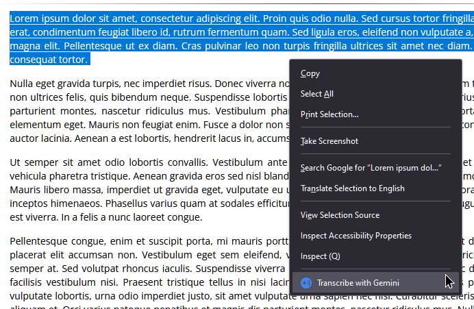
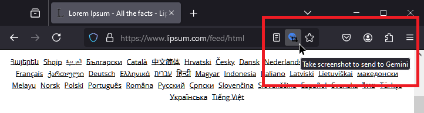
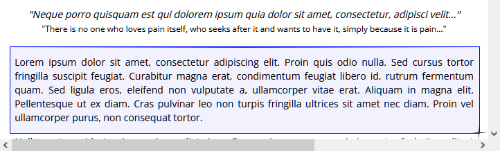
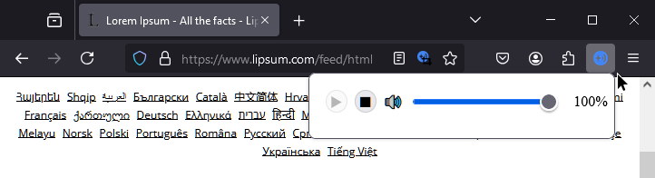

Gemini Live TTS
Gemini Live TTS
Turn text and images into natural-sounding speech using Google's Gemini AI.
Set Up Your API Key
Before you can use the extension, you'll need a Gemini API key:
- Click the "Create API key" button at Google AI Studio.
- Copy the key into the extension's settings page.
- Press "Save".
Note: Keep your API key private and don't share it with others.
Usage Tips
Text to Speech:
Select any text on a webpage, right-click, and choose "Transcribe with Gemini" from the context menu.

Image to Speech:
Click the extension icon in your address bar to activate the image selection tool.

Click and drag to select an area of the page to describe.

Playback Controls:
Click the extension icon in your toolbar to open the playback control popup.
